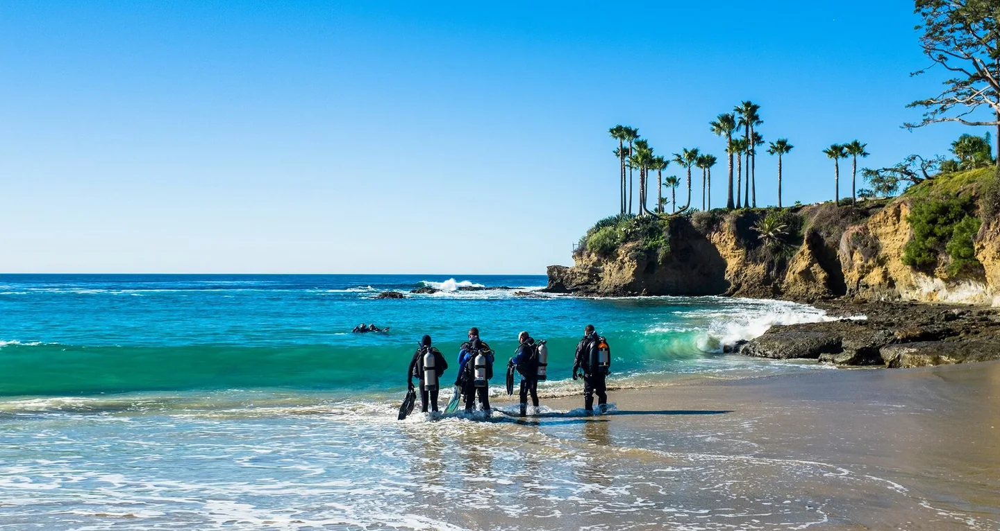

Давайте знакомиться!
Инструктор знакомит читателей со своей работой и историей в дайвинге.
Читать в студииЗаметки инструкторов об обучении, поездках и жизни клуба.

Инструктор знакомит читателей со своей работой и историей в дайвинге.
Читать в студииЛичная история о знакомстве автора с океаном.
Читать в студииИстория о встрече с мантой во время погружения.
Читать в студииИнструктор вспоминает необычное ночное погружение.
Читать в студииРазбор распространённого вопроса о содержимом дайверского баллона.
Читать в студииАвтор сравнивает поездки с ежедневными выходами в море и дайв-сафари.
Читать в студииЗаключительная запись серии о клубной поездке на Филиппины.
Читать в студииТретий день путешествия в серии филиппинских заметок.
Читать в студииВпечатления от погружений во время путешествия 2019 года.
Читать в студииПродолжение дневника поездки на Филиппины.
Читать в студииКак начиналось путешествие клуба на Филиппины.
Читать в студииВпечатления автора от выставки в Москве.
Читать в студии